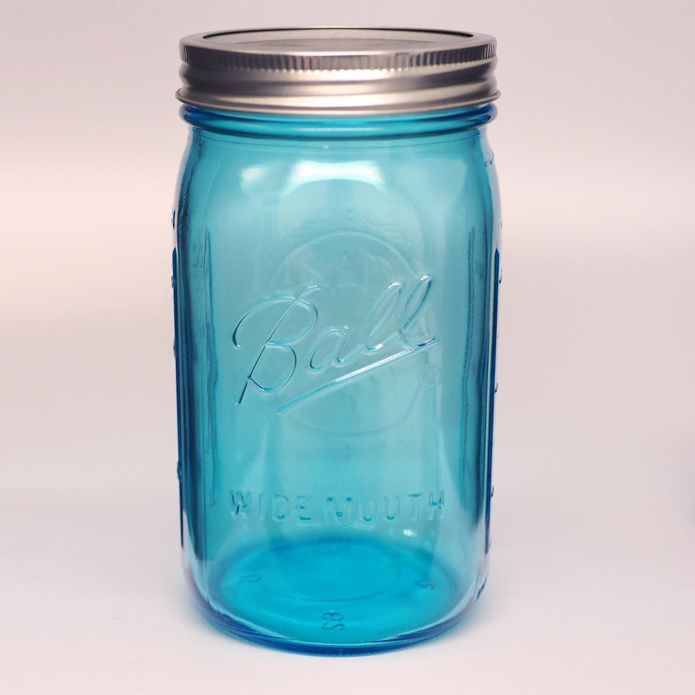

military
 Time to read: 8 min
November 12, 2015
Jarheads
Boy there are a lot of these out there.
Real JAR HEADS…
by the numbers.
And I dont mean as a nickname.
Nobodys.
EMPTY MINDS.
Wandering souls with no purpose..
Worthless people.
USELESS people…
So go ahead, either get drafted or since you couldnt find anything else to do in your life, might as well sacrifice for your country, right?
WELL…. These days… maybe its not so good an idea.
DEPLOYMENT DEPLOYMENT DEPLOYMENT, even if already forwards deployed.
Oh, you think you’re coming home and getting some time off?
Wrong again.
DEPLOYMENT.
REQUIRED MAJOR ship MAINTENANCE.
DEPLOYMENT.
And neither the military nor technology will fix STUPID.
IGNORANT, just not STUPID.
Anyone can learn to point and shoot and take down ISIS or Al Queada in person in the desert.
Anyone can fly a jet and drop a bomb on an unsuspecting villa.(or in some cases a nuke…)
Congress and the white house as of late are looking for brainwashable sponges for thier never ending wars.
They dont give a damn if you come back or not. It would be great if you did and better if you didnt get shell shocked (stuck with horrors in your head you cant get out) aka PTSD.. but nobody really cares.
And they will mark you as having PTSD whether or not you actually have it just to make you look bad and face a lifetime of slander and ridicule.
And did I mention endless harassment whereever you go?
Senseless force medication without warrant?
YEP. ALL of it.
This is how we treat our nations veterans, the BACKBONE, the TOP 5% of our society.
CREME DE LA CREME…
“The BEST of the BEST of the BEST” to quote a movie….
-not to mention those who are getting limbs blown off.
But oh, all for service of country, right?
Lets just go back to war.
Million dollar man here wants more ….back to war…missing arms, legs, we dont care.
Cant sleep?
Narco-lep-tic?
Falls under PTSD.
But its not your fault they did this to you.
Better get benefits so you can get treatment, even though the facilities you go to are the worst volun-told places yet.
NOBODY cares about you now.
“You dont have to come here” says the VA staff.
UH, YEAH, you do. You served.
Nobody else will care for you. Nobody else will pay the bill.
Youd have better luck at an overseas hospital paying with good ole american cash.
And youd probly have a smaller bill that way too. What they do with people coming back from deployment or at the end of an “enlisted” contract(some are officers) is beyond despicable.
And the consequences for getting an education to become an officer, well, I hope yall are lifers, because you WILL PAY for that option.
Come in with a BS degree, want to be an officer?
No problem.
Enlisted? Boy, you are asking for it.
Even one with with ABSOLUTELY ZERO life (or managerial) experience.
Isnt ANNAPOLIS supposed to teach you this?
Because they DONT. Its glaringly obvious when you get to your first ship.
“hi, noob LT here..and I want to run the entire ship myself.”
These days you Might as well be the vietnam war.
“Thank you for serving” is like saying “you brainfucked idiot. Way to go.” Nobody actually means it.
Congress will steal your medals.
ONES you rightfully earned ON DEPLOYMENT.
And they dont care.
Your discharge or medals incorrect?
Better get it fixed before they send you home.
Telling someone afterwards is worse than pulling teeth.
ASSUMING these good-for-nothing underpaid monkey lackeys actually give a shit about you.
Because they dont. They would rather bury your complaint than hear it from the POTUS about not working on your files.
All they see is case file after case file.
They dont give a damn who you are.
And I have an email chain to prove it.
But for all of that, I will give you this.
They make plenty of promises.
Make sure you get it in writing, make sure its signed, sealed, and delivered.
There are lots of benefits. And you are never ever alone in living life ever again.
It is the biggest sorority and fraternity your will ever know.
The branches bicker out of jest, but all are treated with fairness as a single cohesive team. A team from a single platoon to an entire military.
So enjoy the ass chewing and physical beatdown of hard hard(did I say HARD) workouts.
Eventually you’‘ll be in charge and manage people and departments, maybe even ships or commands.
You will make a world-wide difference. Other people will be happy to meet you. To know you. But back home?
NO, not really. PISSANT CENTRAL.
Ive earned my medals.
I served with HONOR.
On one of the most back-asswords planets.
Thats good enough for me.
If you ask me, people in commands that cant handle the initial tour of duty or wind up with PTSD never deserved to serve to begin with.
They are supposed to shit screen people on entrance.
How well thats done is another matter.
Its one tour of duty. Four, sometimes six years.
Unless youre a real screw up, you should be able to finish that off honorably (without going catatonic).
And despite what your Chief may say, management does like to be challenged and set straight on occasion.
Theyd rather it done by someone with rank or a workcenter supervisor, though.
But get your ducks in a row or youre up for the ass-chewing of your life.
And there is no reason why someone with years and years of enlisted (heaven forbid…) service time should NOT be wearing gold.
(You have to be one royal screw up….)
If you screwed up THAT BAD to have gold taken from you, you dont deserve to be in the ranks to begin with.
And dont be fooled, Ive seen Chiefs and OFFICERS fuck up so royally they are forced to EMBARASS themselves in front of thier crew before given the boot.
E5 and above seems to be the Cheese-ing point.
They stop writing you up, but they still chew your ass.
Heres a trick they dont tell you about:
Do one of two things.
Either serve stateside thru Norfolk or San Diego for your first command, or serve overseas TWICE.
As a second command overseas your pay and rank are better than you know. A former Second class Petty Officer told me this.
ALSO, continuous overseas tours are possible, matter of fact they practically push this on you. It is undocumented and hackish but possible. I heard about it when I was in Sasebo. Same town for over 6 “deployments” straight. 12 years in the same city, the same base area.
If overseas stationed- it IS possible.
Some people go places and just never leave. Believe it or not, they want this and bicker and complain if you decide to go stateside after being overseas.
And they generally dont jump coasts, so deployed overseas USUALLY means a west coast command is on the horizon.